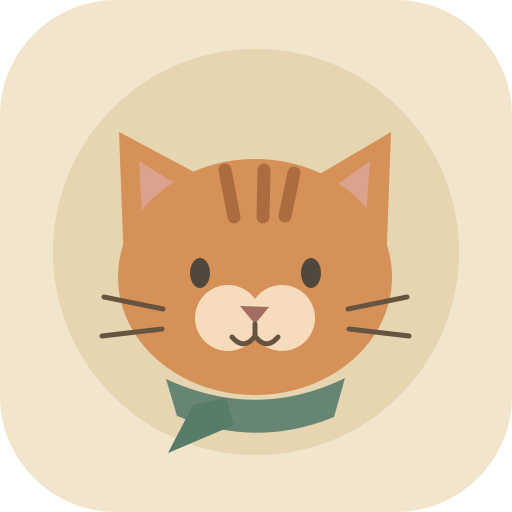

Find your rhythm.
Tap the game or press Space to leap. A second tap gives you a little extra sky.

rooftopcat.A NOORULLAH ADEL GAME✳ SMALL PAWS. BIG ADVENTURES.
Chase a little wonder across the rooftops. Catch fish, find your
rhythm,
and see how far those little paws can take you.
One more rooftop.
One more little adventure.
SPACE or ↑ to jump · Tap twice for a double jump
Tap the game or press Space to leap. A second tap gives you a little extra sky.
Catch them in quick succession for a ×5 streak. Golden fish are worth a little more.
Add a little cat to your Home Screen. Once saved, the rooftops come along offline.
A little cat, right on your Home Screen.
Other iPhone browsers may offer the same Share action. If missing, open the link in Safari. Menu names depend on your iOS version.
Use your browser’s Install app or Add to Home screen option, or the native install button above when available. Open the new icon online once and confirm offline readiness.
Chrome / Edge: use the install icon in the address bar or the browser menu’s app-install option.
Safari on Mac: use File → Add to Dock where supported.
Other browsers: play in a normal tab and bookmark the link if installation is unavailable. Installation is optional.
All game files must be saved first. Browsers can clear or evict storage; installed apps may store scores separately from tabs. Return online to prepare it again if needed.
Small paws. A little practice.
This is a visual, timing-based game. Menus support keyboard and assistive labels; the real-time course is not a fully nonvisual game.
Make the rooftops feel like you.
Scores stay in this browser profile. Runs do not resume on a fresh launch. Use one tab per run. The JSON export is a readable archive, not an automatic restore feature.
Removes this game’s saved scores and preferences from this browser.
AN INDEPENDENT LITTLE ADVENTURE
Rooftop Cat
Designed & developed by Noorullah Adel · 2026.
Game code, cat and skyline illustrations, icons, interface and synthesized fish-catching chimes are original material released under the MIT License.
No external game engine, font download, music recording, stock artwork, advertising or analytics service is bundled. The interface uses device-installed fonts. There are no external runtime requests.
Full MIT license · Rights & provenance
Browser and platform names belong to their respective owners. Apple, Google, Microsoft and Mozilla do not sponsor this game.